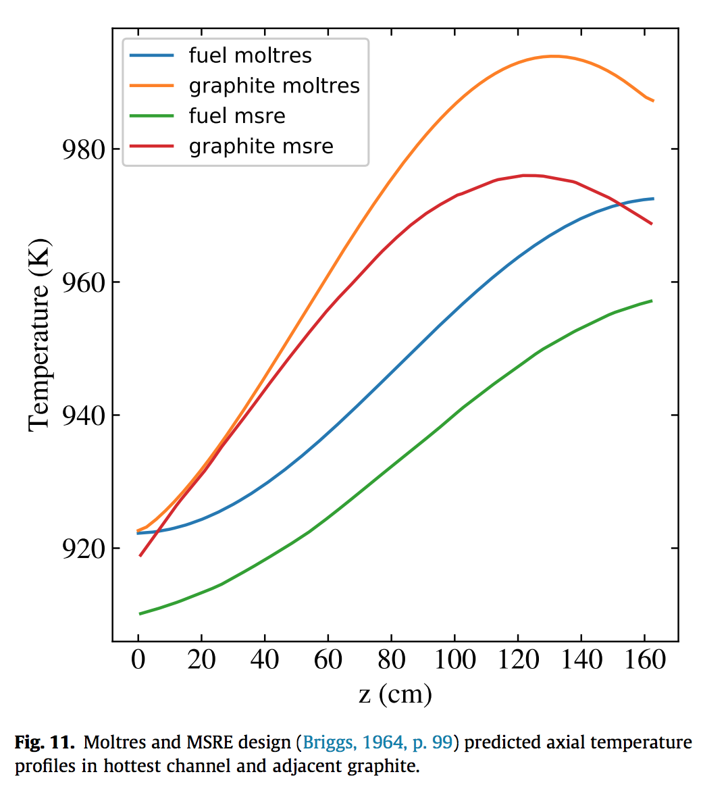

Modeling and Simulation at Disparate Scales
Advanced Reactors and Fuel Cycles Group
Kathryn (Katy) Huff
2018.07.26


Insights at Disparate Scales

Advanced Reactors


MOOSE Framework
Moltres (coupling in MOOSE)
{kind=link}
Intro to Moltres/MOOSE
- Fluid-fuelled, molten salt reactors
- Multi-group diffusion (arbitrary groups)
- Advective movement of delayed neutron precursors
- Navier-Stokes thermal hydraulics
- 3D unstructured
- 2D axisymmetric
- 3D structured
Acquiring Moltres
git clone https://github.com/arfc/moltres
cd moltres
git submodule init
git submodule update
Acquiring Moltres
Moltres is built atop the Multi-physics Object-Oriented Simulation Environment (MOOSE) (Gaston et al.).
- MOOSE interfaces with libMesh to discretize simulation volume into finite elements
- Provides interface for coding residuals that correspond to weak form of governing PDEs; also interface for coding Jacobians → more accurate Jacobians → more efficient convergence
- Residuals and Jacobians handed off to PetSc which handles solution of resulting non-linear system of algebraic equations
In Moltres, neutrons are described with time-dependent multi-group diffusion:
\[ \begin{align} \frac{1}{v_g}\frac{\partial \phi_g}{\partial t} &- \nabla \cdot D_g \nabla \phi_g + \Sigma_g^r \phi_g = \sum_{g \ne g'}^G \Sigma_{g'\rightarrow g}^s \phi_{g'} + \chi_g^p \sum_{g' = 1}^G (1 - \beta) \nu \Sigma_{g'}^f \phi_{g'} + \chi_g^d \sum_i^I \lambda_i C_i \end{align} \]\[ \begin{align} v_g &= \mbox{speed of neutrons in group g} \\ \phi_g &= \mbox{flux of neutrons in group g} \\ t &= \mbox{time} \\ D_g &= \mbox{Diffusion coefficient for neutrons in group g} \\ \Sigma_g^r &= \mbox{macroscopic cross-section for removal of neutrons from group g} \\ \Sigma_{g'\rightarrow g}^s &= \mbox{macroscopic cross-section of scattering from g' to g} \\ \chi_g^p &= \mbox{prompt fission spectrum, neutrons in group g} \\ G &= \mbox{number of discrete groups, g} \\ \nu &= \mbox{number of neutrons produced per fission} \\ \Sigma_g^f &= \mbox{macroscopic cross section for fission due to neutrons in group g} \\ \chi_g^d &= \mbox{delayed fission spectrum, neutrons in group g} \\ I &= \mbox{number of delayed neutron precursor groups} \\ \beta &= \mbox{delayed neutron fraction}\\ \lambda_i &= \mbox{average decay constant of delayed neutron precursors in precursor group i} \\ C_i &= \mbox{concentration of delayed neutron precursors in precursor group i} . \end{align} \]
Delayed neutron precursors are described to include a term representing the effect of fuel advection.
\[ \begin{align} \frac{\partial C_i}{\partial t} &= \sum_{g'= 1}^G \beta_i \nu \Sigma_{g'}^f \phi_{g'} - \lambda_i C_i - \frac{\partial}{\partial z} u C_i \label{eq:precursors} \end{align} \]Moltres MSRE Simulation
{kind=link}
Moltres MSRE Simulation
{kind=link}
Moltres MSRE Simulation

Moltres (coupling in MOOSE)
{kind=link}
Moltres Precursor Drift
{kind=link}
Moltres MSRE Comparison
{kind=link}
Moltres MSRE Comparison
{kind=link}
Moltres MSRE Comparison
{kind=link}
Moltres (cross sections via Serpent)
{kind=link}
Moltres (cross sections via Serpent)
{kind=link}
Reactor Physics and Serpent
{kind=link}
Reactor Physics and Serpent
{kind=link}
A Nuclear Fuel Cycle Simulation Framework
The Nuclear Fuel Cycle
Hundreds of discrete facilities mine, mill, convert, fabricate, transmute, recycle, and store nuclear material.

Fuel Cycle Metrics
- Mass Flow
- inventories, decay heat, radiotoxicity,
- proliferation resistance and physical protection (PRPP) indices.
- Cost
- levelized cost of electricity,
- facility life cycle costs.
- Economics
- power production, facility deployments,
- dynamic pricing and feedback.
- Disruptions
- reliability, safety,
- system robustness.
Agent Based Systems Analysis
A facility might create material.

Agent Based Systems Analysis
It might request material.

Agent Based Systems Analysis
It might do both.

Agent Based Systems Analysis
Even simple fuel cycles have many independent agents.

Dynamic Resource Exchange
 \[N_i \subset N\]
\[N_i \subset N\]
Dynamic Resource Exchange
 \[N_j \subset N\]
\[N_j \subset N\]
Dynamic Resource Exchange
 \[N_i \cup N_j = N\]
\[N_i \cup N_j = N\]
Transition Analysis
Can France transition to SFRs faster by reprocessing spent fuel from other EU nations?
- French LWR to SFR Transition
- Other EU Nations send all SNF to France
- $T_0 = 1970$
- $T_f <= 2150$
- Annual nuclear energy demand growth: 0%
- Sensitivity Analysis: Legacy LWR lifetimes vs. time to transition.
- Sensitivity Analysis: SFR breeding ratio vs. time to transition.


Fuel Cycle Metrics
- Mass Flow
- inventories, decay heat, radiotoxicity,
- proliferation resistance and physical protection (PRPP) indices.
- Cost
- levelized cost of electricity,
- facility life cycle costs.
- Economics
- power production, facility deployments,
- dynamic pricing and feedback.
- Disruptions
- reliability, safety,
- system robustness.
Agent Based Systems Analysis
A facility might create material.
Agent Based Systems Analysis
It might request material.
Agent Based Systems Analysis
It might do both.
Agent Based Systems Analysis
Even simple fuel cycles have many independent agents.
Dynamic Resource Exchange
\[N_i \subset N\]
Dynamic Resource Exchange
\[N_j \subset N\]
Dynamic Resource Exchange
\[N_i \cup N_j = N\]
Transition Analysis
Can France transition to SFRs faster by reprocessing spent fuel from other EU nations?
- French LWR to SFR Transition
- Other EU Nations send all SNF to France
- $T_0 = 1970$
- $T_f <= 2150$
- Annual nuclear energy demand growth: 0%
- Sensitivity Analysis: Legacy LWR lifetimes vs. time to transition.
- Sensitivity Analysis: SFR breeding ratio vs. time to transition.
Conclusions
- The collaborative strategy speeds up the french transition.
- In particular, the nations planning aggressive nuclear reduction will be able phase out nuclear without constructing a permanent repository.
- Lifetime extensions slow down the transition, especially long extensions.
- Increasing the lifetime of French LWRs decreases reprocessing demand
Links
A Few of My Favorite Things
- C++, Python, Fortran
- Serpent, MOOSE, ORIGEN
- xml, markdown, rst, $\LaTeX$
- Doxygen, sphinx
- CMake, conda, macports
- GoogleTest, nose
- hdf5, sqlite
- cython, boost, Coin
- jekyll, reveal.js, beamer
- yt, matplotlib, paraview
THE END
Katy Huff
katyhuff.github.io/2018-07-26-sandia
Modeling and Simulation at Disparate Scales by Kathryn Huff is licensed under a Creative Commons Attribution 4.0 International License.
Based on a work at http://katyhuff.github.io/2018-07-26-sandia.